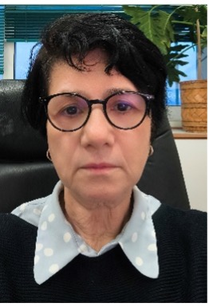

Keynotes
We are very pleased to announce the TPDL 2025 invited speakers.
"Interactive Digital Storytelling"
by Yannis Ioannidis, National and Kapodistrian University of Athens
Yannis Ioannidis (Ph.D., Computer Sciences, UC Berkeley; MSc, Applied Mathematics, Harvard University; Diploma, Electrical Engineering, National Technical University of Athens) is the President of the Association of Computing Machinery (ACM). He is a Professor at the Department of Informatics and Telecom of the University of Athens as well as an Associated Faculty at the “Athena” Research and Innovation Center, where he also served as the President and General Director for 10 years. His research interests include Database and Information Systems, Data Science, Data Infrastructures and Digital Repositories, Recommender Systems and Personalization, and Interactive Digital Storytelling, topics on which he has published over 180 articles in leading journals and conferences and holds four patents. His work is often inspired by and applied to data management and analysis problems that arise in industrial environments or in the context of other scientific fields (Social Sciences and Humanities, Life Sciences, Physical Sciences) and the Arts. He is an ACM and IEEE Fellow, a member of Academia Europaea, and a recipient of several research, teaching, and service awards. He is a co-founder of OpenAIRE, the international data infrastructure for Open Science in Europe, as well as of several AI/data-driven start-ups. He is also a co-chair of the Global Climate Hub of the UN Sustainable Development Solutions Network.
"Digital Humanities on the Semantic Web: from Infrastructure to Practical Applications, AI-based Knowledge Discovery, and Web of Wisdom"
by Eero Hyvönen, Aalto University
Abstract
Publishing Cultural Heritage (CH) data and Digital Humanities (DH) has evolved in phases from text carving and handwriting to printing texts, to publishing texts on-line, to publishing FAIR linked data comprehensible to computers for data enrichment and analysis, and to AI-based knowledge discovery on the Web, a “Web of Wisdom” [1]. In this keynote, lessons learned are overviewed on developing a national Semantic Web infrastructure [2] and over 20 in-use systems based on it with up to millions of end users during 2002-2024 [3]. The underlying linked data in these applications include museum collections, bibliographical data in libraries, medieval and renaissance manuscripts, military history, biographies, narratives, historical letter data, archaeological finds, legislation, parliamentary speeches, and art. Targeted to Digital Humanities researchers, application developers, and the public, these systems contain a Linked Open Data (LOD) service with a live SPARQL endpoint that can be used with modest programming skills for DH research, and a ready-to-use semantic portal on top of it. This work has led into the so-called Sampo Model for creating and publishing CH Knowledge Graphs (KG) as LOD services and semantic portal User Interfaces (UI).

Eero Hyvönen is Professor of semantic media technology at the Aalto University, Department of Computer Science, and director of Helsinki Centre for Digital Humanities (HELDIG) at the University of Helsinki. His research has focused since 2001 on Semantic Web and Linked (Open) Data technologies, developing with his Semantic Computing Research Group (SeCo) (https://seco.cs.aalto.fi/) the national semantic web infrastructure in Finland (https://seco.cs.aalto.fi/projects/lodi4dh/) and its applications in different areas, especially in Cultural Heritage and for Digital Humanities research (https://seco.cs.aalto.fi/applications/sampo/). Eero Hyvönen has published nearly 600 articles and books and got nearly 30 international and national honorary prizes and acknowledgements.
More information:
[1] Eero Hyvönen: Using the Semantic Web in Digital Humanities: Shift from Data Publishing to Data-analysis and Serendipitous Knowledge Discovery. Semantic Web, vol. 11, no. 1, pp. 187-193, 2020.
[2] Eero Hyvönen: How to Create a National Cross-domain Ontology and Linked Data Infrastructure and Use It on the Semantic Web. Semantic Web, vol. 15, no. 4, pp. 1499-1513, 2024.
[3] Eero Hyvönen: Digital Humanities on the Semantic Web: Sampo Model and Portal Series. Semantic Web, vol. 14, no. 4, pp. 729-744, 2023.
[4] Eero Hyvönen: Serendipitous knowledge discovery on the Web of Wisdom based on searching and explaining interesting relations in knowledge graphs. Journal of Web Semantics, Elsevier, 2025.
"Data Quality in the Age of AI"
by Felix Naumann, University of Potsdam
Abstract
Data quality comprises a large set of dimensions, covering many facets including simple statistics, syntactic problems, factual errors, and organizational and business aspects. With the current trend in data-oriented sciences and the increasing reliance on machine learning methods and AI systems, the challenges of poor data quality are ever more apparent. Even recent legislation, such as the EU AI Act, mentions data quality requirements for training data. With it, the notion of data quality extends to novel dimensions, such as fairness, diversity, or explainability. In the talk we shall highlight research in this field and point out current challenges and research opportunities.
Felix Naumann studied mathematics, economy, and computer sciences at the University of Technology in Berlin and completed his PhD thesis in the area of data quality at Humboldt University of Berlin in 2000. After a PostDoc position at the IBM Almaden Research Center working on data integration topics, he came assistant professor for information integration, again at the Humboldt-University of Berlin in 2003. Since 2006 he holds the chair for Information Systems at the Hasso Plattner Institute (HPI) at the University of Potsdam in Germany. He has been visiting researcher at QCRI, AT&T Research, IBM Research, and SAP. His research interests include data profiling, data quality and cleansing, and data integration, recorded in over 200 scientific publications. Next to numerous PC memberships for international conferences, he has organized several conferences in various roles, including VLDB 2021 as PC co-chair, and he is the Editor-in-Chief of the ACM Journal of Data and Information Quality (JDIQ). More details are at https://hpi.de/naumann/people/felix-naumann.html.
"Explainability, Fairness, and Their Interplay"
by Evaggelia Pitoura, University of Ioannina
Abstract
As AI algorithms are increasingly deployed in domains that profoundly impact human lives, concerns about their fairness and transparency have become more pressing. Recently, significant attention has been directed towards the interconnection of explainability and fairness to advance responsible AI systems. Despite this growing interest, the relationship between these two concepts remains underexplored. In this talk, I will share our recent research on leveraging post-hoc explainability methods to detect and understand the root causes of biases in algorithmic outputs. Additionally, I will discuss the role of explainability in Retrieval-Augmented Generation (RAG) pipelines and highlight opportunities for data-driven research in this critical area.
Evaggelia Pitoura is a Professor at the Department of Computer Science and Engineering at the University of Ioannina and a Lead Researcher at Archimedes Research Unit of Athena RC, Greece. She holds a BEng degree from the University of Patras, Greece, and an MS and PhD from Purdue University, USA. Her current research interests focus on two primary areas: responsible data management, with a focus on fairness, explainability, and their interplay; and on graph exploration and analysis. For her work, he has received best paper awards, a Marie Currie Fellowship and two Recognition of Service Awards from ACM. She is an ACM senior member, chair of the Greek ACM-W event steering committee, chair of the Hellenic ACM SIGMOD chapter, and member of the sectorial scientific council of Greece National Council for Research, Technology and Innovation.